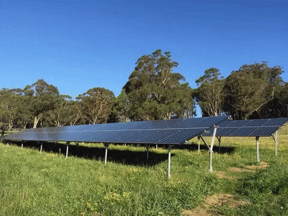
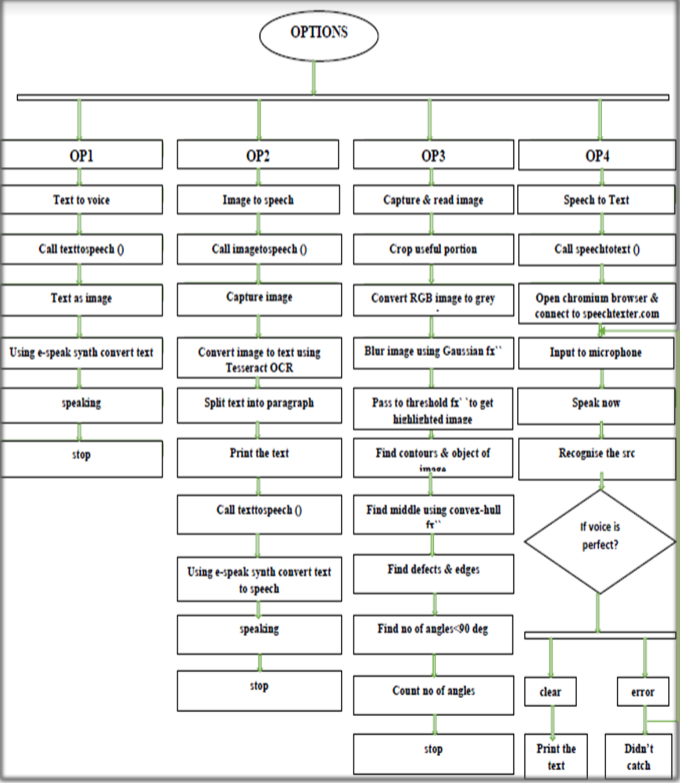

Projects
Construction Site Safety: Real-Time Detection of Personal Protective Equipment Using YOLO
- With the advancement in the image processing algorithm with its high performance, robustness, and scalability under different conditions, the implementation stages include data gathering, labeling the images, training the model, and dynamic real-time implementation.
- Our results demonstrated a significant rise in efficiency as well as safety protocol, thus providing a scalable solution for mass deployments at the building site.
Advanced Defect Identification: Capacitor Inspection Utilizing ADLINK Camera Technology
- The approach enhances defect identification precision through high-resolution imaging and specialized algorithms, ensuring robust quality control in manufacturing processes.
- By leveraging advanced capabilities such as image processing and AI integration, the system detects and categorizes defects swiftly and accurately, optimizing production efficiency and product reliability in capacitor manufacturing.
Enhanced Autopart Classification: COBOT Integration with Intel DepthSensing Camera for Motor Components.
- It involves the integration of collaborative robot (COBOT) technology with Intel DepthSensing cameras to streamline and enhance the classification of motor components.
- By leveraging advanced capabilities such as image processing and AI integration, the system detects and categorizes defects swiftly and accurately, optimizing production efficiency and product reliability in capacitor manufacturing.
Precision Maintenance: Thermal Inspection of Toyota Motors Utilizing Advanced Thermal Camera Technology.
- The approach enhances defect identification precision through high-resolution imaging and specialized algorithms, ensuring robust quality control in manufacturing processes.
- This advanced system utilizes depth-sensing capabilities to accurately identify and categorize various parts based on size, shape, and other critical attributes.
- By automating this process, it improves efficiency, reduces errors, and ensures precise inventory management.
Intelligent Personnel Hazard Management System - Real-Time Tracking and Monitoring with AWS IoT.
- It employs state-of-the-art sensors and cloud-based analytics to swiftly detect and respond to potential hazards, ensuring immediate alerts and actionable insights for proactive risk mitigation.
- This comprehensive approach enhances safety protocols, optimizes resource allocation, and promotes a secure working environment in real-time.
High-TechSolar PanelSurveillance: Thermal and Visual Inspection via Drone Technology andSensor Fusion.
- This innovative approach integrates thermal and visual inspections to detect anomalies and ensure optimal performance and reliability of solar arrays.
- By leveraging real-time data and automated analysis, the system provides proactive maintenance insights, maximizing energy production efficiency and prolonging equipment lifespan in solar energy installations.
Enhanced Fire Extinguisher Inspection Protocol: Integrating Thermal and Visual Analysis with Boston Dynamics Spot Robot.
- By combining thermal and visual analysis capabilities with the agility of the Boston Dynamics Spot Robot, this system ensures thorough and efficient inspection of fire safety equipment.
- It enhances safety protocols by detecting potential issues early, improving maintenance efficiency, and ensuring compliance with rigorous safety standards in various industrial and commercial settings.
Next-Gen Inspection Methodology: Leveraging Boston DynamicsSpot Robot and IBM Maximo Suite for Integrated Circuit Transformer Analysis.
- This innovative methodology integrates the agility and precision of the Boston Dynamics Spot Robot with the IBM Maximo Suite's comprehensive analytics and management capabilities.
- The system optimizes efficiency, enhances reliability, and ensures peak performance of critical electronic components in manufacturing and technology sectors by combining real-time data collection, analysis, and predictive maintenance.
Revolutionizing Welding Analytics: COBOT-EnabledSmart Manufacturing for Magna.
- Leveraging collaborative robot (COBOT) technology, this initiative enhances manufacturing efficiency and precision at Magna.
- By integrating smart analytics and automation, the system optimizes welding operations, improves quality control, and ensures consistent production standards.
- This innovative solution empowers Magna with real-time insights and adaptive capabilities, driving productivity and competitiveness in the automotive and industrial sectors.

Envision for Renewable Energy, Business Intelligence and Analytics.
- Harnesses the power of Envision's advanced analytics capabilities to optimize operations and maximize efficiency in renewable energy projects.
- By integrating sophisticated data analysis tools, this solution provides real-time insights into energy production, consumption patterns, and operational performance.
- It enables stakeholders to make informed decisions, improve resource allocation, and enhance overall sustainability efforts in the renewable energy sector.
- The platform utilizes advanced algorithms and machine learning techniques to analyze vast datasets from renewable energy sources. This includes solar, wind, hydro, and other sustainable energy systems.

Towards Many to Many Communications Among Blind, Deaf & Dumb Users
- The system enables real-time, multi-modal interactions by leveraging IoT devices and sensors.
Covid 19 Outbreak Analysis Prediction Forecasting
- It involves gathering and processing vast amounts of data from sources such as health organizations, government reports, and public datasets.
- Through advanced data analytics techniques, including statistical analysis and machine learning algorithms, the project seeks to uncover patterns in the spread and impact of Covid-19 across different regions and demographics.
- By examining historical data and current trends, the project provides insights into the progression of Covid-19 outbreaks in different geographical areas.
- Using predictive modeling techniques, the project aims to forecast future Covid-19 cases, hospitalizations, and fatalities.
- Beyond short-term predictions, the project focuses on forecasting the long-term trajectory of the pandemic.
- The project includes the development of interactive dashboards, visualizations, and reports that summarize findings and trends.

Parts of Speech Tagging for data preprocessing using NLP
- "Parts-of-Speech-Tagging-for-data-preprocessing-using-NLP" involves applying Natural Language Processing (NLP) techniques to analyze and annotate text by identifying and tagging each word with its corresponding part of speech (e.g., noun, verb, adjective).
- This preprocessing step enhances text understanding for tasks such as sentiment analysis, information extraction, and machine translation, facilitating more accurate and efficient data processing in various NLP applications.
- By determining the grammatical category of each word, POS tagging aids in understanding the semantic structure of sentences.
Women Clothing Review Prediction using Machine Learning and Flask
- It involves building a predictive model that analyzes reviews of women's clothing products using machine learning techniques, and deploying it as a web application using Flask, a Python web framework.
- Gathering a dataset of women's clothing reviews from sources like e-commerce platforms.
- Preprocessing involves cleaning the text, removing stopwords, and possibly performing sentiment analysis to categorize reviews as positive, neutral, or negative.
- Extracting features from the text data, such as word frequencies, n-grams, or using advanced techniques like word embeddings (e.g., Word2Vec or GloVe) to represent words in a numerical format suitable for ML algorithms.